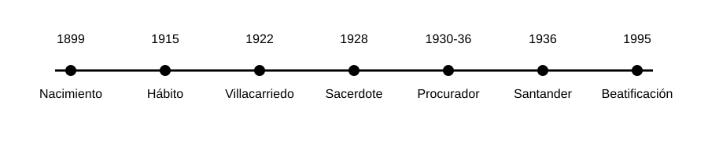
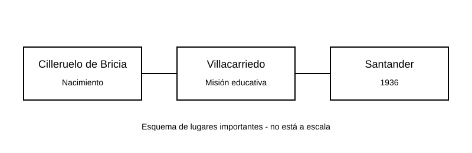

Infancia y vocación
Nació en Cilleruelo de Bricia, en la provincia de Burgos. En 1915 tomó el hábito escolapio y comenzó su formación dentro de las Escuelas Pías.
Sacerdote escolapio, educador y mártir.
Alfredo Parte Sáiz fue un sacerdote escolapio español. Nació el 2 de junio de 1899 en Cilleruelo de Bricia, Burgos. Desde joven eligió la vida religiosa y dedicó gran parte de su vida a la educación.
En las Escuelas Pías se lo recuerda por su trabajo con los alumnos, por su forma sencilla y alegre de vivir la fe y por mantenerse fiel a su vocación en momentos difíciles.
Imagen principal pendiente: acá vamos a colocar un retrato del Beato Alfredo Parte Sáiz tomado de una fuente confiable.
Nació en Cilleruelo de Bricia, en la provincia de Burgos. En 1915 tomó el hábito escolapio y comenzó su formación dentro de las Escuelas Pías.
Durante sus estudios tuvo una enfermedad en una pierna que le dejó una dificultad permanente para caminar. A pesar de esto, continuó con su formación religiosa.
Fue ordenado sacerdote en Palencia en 1928. Su nombre religioso fue Alfredo de la Virgen.
Desde 1922 estuvo vinculado al colegio escolapio de Villacarriedo, en Cantabria. Allí enseñó y acompañó a los alumnos, especialmente a los más chicos del internado.
Entre 1930 y 1936 también fue procurador del colegio, por lo que además de enseñar tenía responsabilidades de organización.
En 1936, durante la Guerra Civil española y en un contexto de persecución religiosa, Alfredo Parte fue detenido. Murió en Santander el 27 de diciembre de ese año.
Es recordado como mártir porque mantuvo su identidad como sacerdote y escolapio. El 1 de octubre de 1995 fue beatificado por el papa Juan Pablo II junto con otros mártires escolapios.

Su legado está relacionado con el carisma de San José de Calasanz: educar y acompañar a niños y jóvenes desde la fe.
Para las Escuelas Pías, su historia es un ejemplo de servicio, constancia y fidelidad a la vocación. Su vida muestra que la educación también puede ser una forma de ayudar y acompañar a otras personas.
Estos son tres lugares relacionados con la vida de Alfredo Parte Sáiz:

Esta parte quedará preparada para agregar la funcionalidad con JavaScript en la fase 4.
También se utilizará el material de clase preparado por el Hno. Santiago.